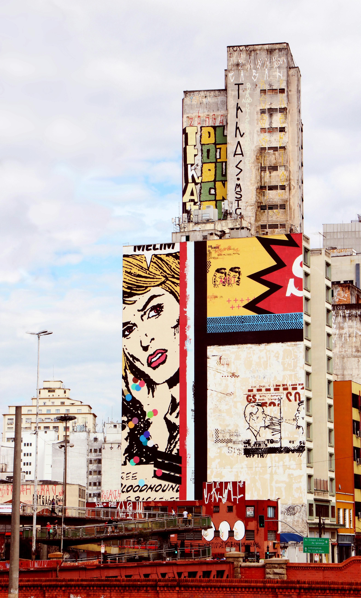
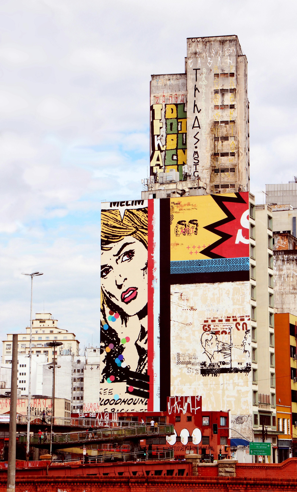
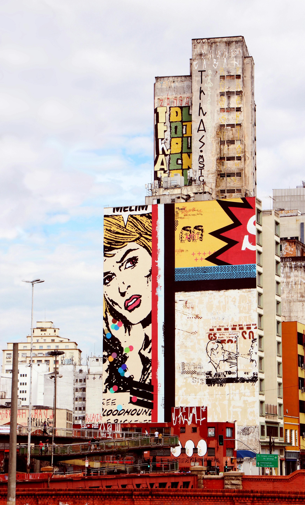

A maior cidade do Brasil, e centro econômico, financeiro e cultural do país.
População: ~12,3 milhões

Grande polo industrial e abriga o principal aeroporto internacional do Brasil.
População: ~1,4 milhão


Importante centro de tecnologia, ciência e educação.
População: ~1,2 milhão


Conhecida por sua forte presença na indústria automobilística.
População: ~850 mil


Também parte do ABC Paulista, com destaque para a indústria e comércio.
População: ~723 mil